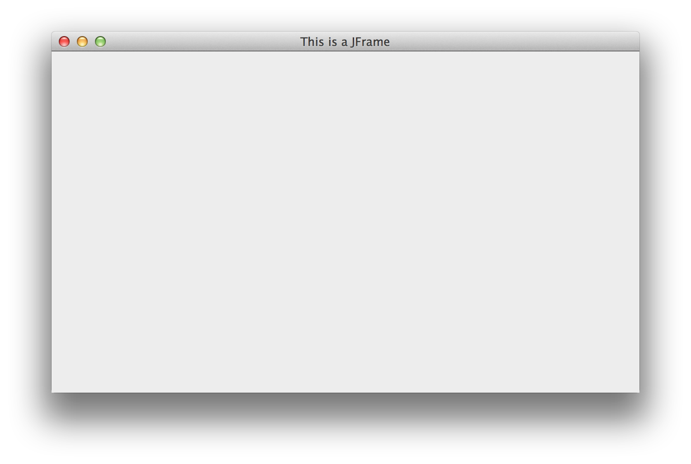
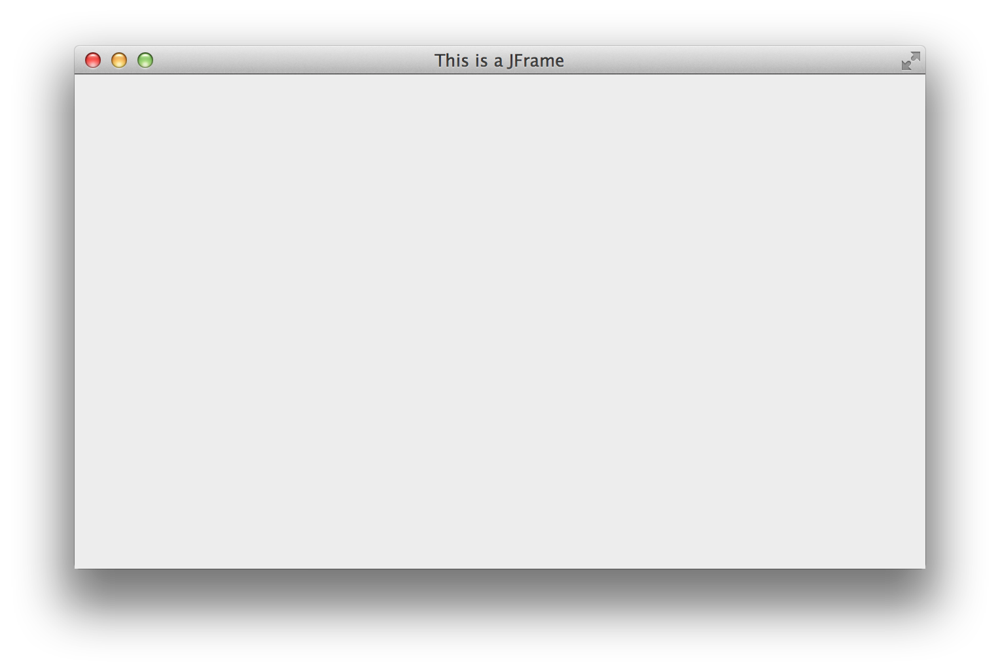

Developing an OSX Application in Java
This article is incomplete
I haven't found any good development guides for Java apps on OSX so I thought I'd write one myself.
I want this article to be both a guide and a reference. I'll try to add/edit info as I learn it through experimentation. If you have any info you think belongs in this article feel free to contact me.
All of the Apple related classes are located in the com.apple.eawt package which should come with your Mac JDK. Unfortunately these classes are not documented. I think they used to be but all links to old doc pages that I've found online lead to 404's.
There quite a few classes in the com.apple.eawt package but the most important one is Application. This class lets you get an Application instance through the static getApplication() method which represents your app on OSX. Through this instance you'll be able to add all kinds of cool functionality which will make your app feel a lot more native to OSX.
Throughout this article I'll be referencing macApplication which is simply one such Application instance:
Application macApplication = Application.getApplication();
Events
So the whole com.apple.eawt system abstractifies user interaction with OSX specific app components (like menubar items, I'll get to that) as well operations originating from the OS by throwing events. This abstractification is a bit convoluted and took me quite a bit to wrap my head around.
The com.apple.eawt.AppEvent class contains all the different OSX specific events that might get thrown (in the form of abstract subclasses).
I've separated these events into different categories:
Menu Bar Item Events
com.apple.eawt.AppEvent.AboutEventcom.apple.eawt.AppEvent.PreferencesEventcom.apple.eawt.AppEvent.QuitEvent
App State Events
com.apple.eawt.AppEvent.AppReOpenedEventcom.apple.eawt.AppEvent.AppForegroundEventcom.apple.eawt.AppEvent.AppHiddenEvent
Computer State Events
com.apple.eawt.AppEvent.ScreenSleepEventcom.apple.eawt.AppEvent.SystemSleepEventcom.apple.eawt.AppEvent.FullScreenEvent
The names of these events should pretty clearly indicate their purpose.
Miscellaneous Events (aka I'm not exactly sure what these do)
com.apple.eawt.AppEvent.FilesEvent: I think this is just an abstract class that helps you work with lists of files for stuffcom.apple.eawt.AppEvent.OpenFilesEvent: ExtendsFilesEvent. Not sure where this event would originate fromcom.apple.eawt.AppEvent.PrintFilesEvent: ExtendsFilesEvent. Not sure where this event would originate from
com.apple.eawt.AppEvent.UserSessionEvent: I think this is thrown when the computer comes from or goes to the login screencom.apple.eawt.AppEvent.OpenURIEvent: Not sure how this event is different fromOpenFilesEvent(or where it would originate from)
Event Handlers
Here's where things get confusing.
Allow me to compare the com.apple.eawt event system to Swing’s event system:
- Similarity: Both systems feature different types of events which fall into different categories
- Difference: Swing has a uniform way of handling events:
someSwingComponent.addSomeListener(paramSomeEvent). On the other hand,com.apple.eawtdoesn’t have a uniform way to handle events.
com.apple.eawt provides handlers for some events.
Here are the handlers available:
com.apple.eawt.AboutHandlercom.apple.eawt.PreferencesHandlercom.apple.eawt.OpenFilesHandlercom.apple.eawt.PrintFilesHandlercom.apple.eawt.OpenURIHandlercom.apple.eawt.QuitHandler
Implementing these handlers is pretty straightforward (demonstrated with com.apple.eawt.PreferencesHandler and com.apple.eawt.AboutHandler in the next section).
The events that don't have handlers instead have listeners, I'm not sure why… Maybe “handlers” are for user input whereas “listeners” are for OS induced operations? Seems more confusing and redundant than anything else.
Here are the listeners available:
com.apple.eawt.AppReOpenedListenercom.apple.eawt.AppForegroundListenercom.apple.eawt.AppHiddenListenercom.apple.eawt.UserSessionListenercom.apple.eawt.ScreenSleepListenercom.apple.eawt.SystemSleepListener
All these listeners extend com.apple.eawt.AppEventListener.
Register these listeners through macApplication.addAppEventListener(AppEventListener paramAppEventListener).
You can write your own listener that extends com.apple.eawt.AppEventListener but attempting to register it will result in nothing happening. Only the above 6 listeners can be registered. This should be obvious since the only events you’re catching with this system are being thrown by the OS, which means you can’t create your own events and therefore have no reason to create your own listeners.
“Catch All” Adapter
After understanding how the com.apple.eawt event system works I felt it was only appropriate to quickly write up and share an event adapter that catches everything. I realize it’s not very elegant but it “just makes sense”.
I’m including it here as well as in the com.moomoohk.Mootilities.OSUtils.MacOSX package of Mootilities (a pretty handy project of mine that you should totally check out):
import com.apple.eawt.AboutHandler;
import com.apple.eawt.AppEvent.AboutEvent;
import com.apple.eawt.AppEvent.AppForegroundEvent;
import com.apple.eawt.AppEvent.AppHiddenEvent;
import com.apple.eawt.AppEvent.AppReOpenedEvent;
import com.apple.eawt.AppEvent.OpenFilesEvent;
import com.apple.eawt.AppEvent.OpenURIEvent;
import com.apple.eawt.AppEvent.PreferencesEvent;
import com.apple.eawt.AppEvent.PrintFilesEvent;
import com.apple.eawt.AppEvent.QuitEvent;
import com.apple.eawt.AppEvent.ScreenSleepEvent;
import com.apple.eawt.AppEvent.SystemSleepEvent;
import com.apple.eawt.AppEvent.UserSessionEvent;
import com.apple.eawt.AppForegroundListener;
import com.apple.eawt.AppHiddenListener;
import com.apple.eawt.AppReOpenedListener;
import com.apple.eawt.Application;
import com.apple.eawt.OpenFilesHandler;
import com.apple.eawt.OpenURIHandler;
import com.apple.eawt.PreferencesHandler;
import com.apple.eawt.PrintFilesHandler;
import com.apple.eawt.QuitHandler;
import com.apple.eawt.QuitResponse;
import com.apple.eawt.ScreenSleepListener;
import com.apple.eawt.SystemSleepListener;
import com.apple.eawt.UserSessionListener;
/**
* An event adapter meant to catch all the com.apple.eawt events.
*
* @author Meshulam Silk (moomoohk@ymail.com)
* @since Sep 27, 2014
*/
public abstract class MacOSXAppEventAdapter implements AboutHandler, PreferencesHandler, PrintFilesHandler, OpenFilesHandler, OpenURIHandler, QuitHandler, AppReOpenedListener, AppForegroundListener, AppHiddenListener, UserSessionListener, ScreenSleepListener, SystemSleepListener
{
/**
* Constructor
*
* Registers this instance with the com.apple.eawt system
*/
public MacOSXAppEventAdapter()
{
Application.getApplication().addAppEventListener(this);
Application.getApplication().setAboutHandler(this);
Application.getApplication().setPreferencesHandler(this);
Application.getApplication().setPrintFileHandler(this);
Application.getApplication().setOpenFileHandler(this);
Application.getApplication().setOpenURIHandler(this);
Application.getApplication().setQuitHandler(this);
}
@Override
public abstract void systemAboutToSleep(SystemSleepEvent paramSystemSleepEvent);
@Override
public abstract void systemAwoke(SystemSleepEvent paramSystemSleepEvent);
@Override
public abstract void screenAboutToSleep(ScreenSleepEvent paramScreenSleepEvent);
@Override
public abstract void screenAwoke(ScreenSleepEvent paramScreenSleepEvent);
@Override
public abstract void userSessionDeactivated(UserSessionEvent paramUserSessionEvent);
@Override
public abstract void userSessionActivated(UserSessionEvent paramUserSessionEvent);
@Override
public abstract void appHidden(AppHiddenEvent paramAppHiddenEvent);
@Override
public abstract void appUnhidden(AppHiddenEvent paramAppHiddenEvent);
@Override
public abstract void appRaisedToForeground(AppForegroundEvent paramAppForegroundEvent);
@Override
public abstract void appMovedToBackground(AppForegroundEvent paramAppForegroundEvent);
@Override
public abstract void appReOpened(AppReOpenedEvent paramAppReOpenedEvent);
@Override
public abstract void handleQuitRequestWith(QuitEvent arg0, QuitResponse arg1);
@Override
public abstract void openURI(OpenURIEvent paramOpenURIEvent);
@Override
public abstract void openFiles(OpenFilesEvent paramOpenFilesEvent);
@Override
public abstract void handlePreferences(PreferencesEvent paramPreferencesEvent);
@Override
public abstract void printFiles(PrintFilesEvent paramPrintFilesEvent);
@Override
public abstract void handleAbout(AboutEvent paramAboutEvent);
}
Menu Items
The first thing you'll want to do is add and customize the default OSX menu items (About, Preferences, etc.).
It was super confusing to figure out due to all the outdated tutorials and docs I've found online coupled with the fact that a lot of classes are deprecated.
You'll notice that by default your app bundle doesn't have a “Preferences” item in the main app menu. I assume this is because most people won't implement their own preferences implementation. Most (if not all) of the guides I came across online state that you should call macApplication.setEnabledPreferencesMenu(true); or macApplication.addPreferencesMenuItem() to get the item to show up. However, these methods are deprecated and I therefore recommend you don't use them.
To get the “Preferences” item to show up all you seemingly need to do is implement a handler for that item, like so:
macApplication.setPreferencesHandler(new PreferencesHandler()
{
@Override
public void handlePreferences(PreferencesEvent paramPreferencesEvent)
{
// Make preferences window appear here
}
});
This appears to be applicable to the “About” menu item as well:
macApplication.setAboutHandler(new AboutHandler()
{
@Override
public void handleAbout(AboutEvent paramAboutEvent)
{
// Make about window appear here
}
});
This code should replace macApplication.setEnabledAboutMenuItem(true); and macApplication.addAboutMenuItem();.
Fullscreen
In Mac OS X Lion (10.7) Apple introduced full screen apps.
Calling FullScreenUtilities.setWindowCanFullScreen(frame, true);, where frame is your window object (as in, extends java.awt.Window. This includes javax.swing.JFrame), will enable this functionality.
Before enabling full screen:

After enabling full screen:

To programmatically toggle full screen mode call macApplication.requestToggleFullScreen(frame);. There’s no way to set the fullscreen state manually, only a toggle.
Note
I'm not sure how com.apple.eawt handles these calls on systems older than 10.7. Here's a more complete example with a (possibly redundant) check to make sure the system is at least Mac OS X Lion:
if (System.getProperty("os.name").startsWith("Mac OS X"))
{
String osVer = System.getProperty("os.version");
int major = Integer.parseInt(osVer.substring(0, osVer.indexOf(".")));
osVer = osVer.substring(osVer.indexOf(".") + 1);
int minor = Integer.parseInt(osVer.substring(0, osVer.indexOf(".")));
if (major >= 10 && minor >= 7)
{
FullScreenUtilities.setWindowCanFullScreen(frame, true);
macApplication.requestToggleFullScreen(frame);
}
}